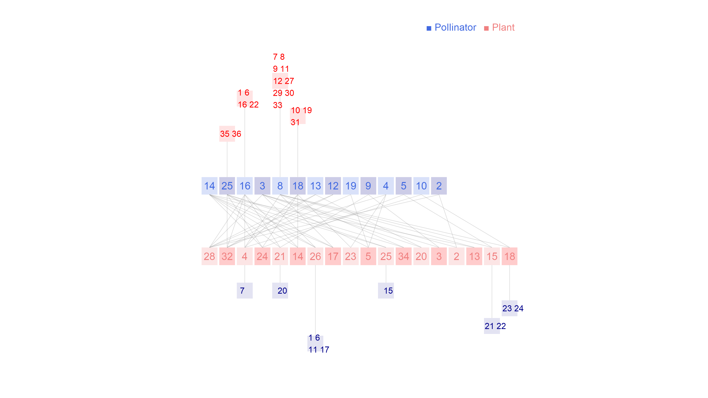

Network: M_PL_003

Pollinator 1 Andinus venustus, 2 Anthidium espinosai, 3 Anthidium sp1 M_PL_003, 4 Bombus dahlbomii, 5 Coleoptera sp4 M_PL_003, 6 Cynthia terpsichore, 7 Dasybasis sp1 M_PL_003, 8 Diptera sp1 M_PL_003, 9 Faunula leucoglene, 10 Habromyia lipoflava, 11 Hypsochila wagenknechti, 12 Megachile semirufa, 13 Megachile sp1 M_PL_003, 14 Phulia nymphula, 15 Pseudolucia chilensis, 16 Scaeva melanostoma, 17 Tatochila mercedis, 18 Unidentified sp2 M_PL_003, 19 Unidentified sp3 M_PL_003, 20 Unidentified sp5 M_PL_003, 21 Unidentified sp6 M_PL_003, 22 Unidentified sp7 M_PL_003, 23 Vibrissomyia sp1 M_PL_003, 24 Villa sp1 M_PL_003, 25Yramea modesta
Plant
1 Acaena pinnatifida, 2 Adesmia capitellata, 3 Adesmia glomerula, 4 Azorella madreporica, 5 Caiophora coronata, 6 Calandrinia affinis, 7 Calandrinia caespitosa, 8 Calandrinia occulta, 9 Calandrinia picta, 10 Calandrinia sericea, 11 Cardamine nivalis, 12 Chaetanthera flabellata, 13 Chaetanthera lycopodioides, 14 Draba gilliesii, 15 Draba tenuis, 16 Erigeron andicola, 17 Junellia uniflora, 18 Laretia acaulis, 19 Leuceria salina, 20 Loasa caespitosa, 21 Nassauvia lagascae, 22 Nassauvia pinnigera, 23 Nassauvia pungens, 24 Nototriche compacta, 25 Oreopolus glacialis, 26 Oxalis compacta, 27 Oxalis sp1 M_PL_003, 28 Phacelia secunda, 29 Pozoa coriacea, 30 Ranunculus peduncularis, 31 Senecio francisci, 32 Tropaeolum polyphyllum, 33 Valeriana radicalis, 34 Viola atropurpurea, 35 Viola montagnei, 36Viola philippii
Arroyo, M.T.K., R. Primack & J.J. Armesto. 1982. Community studies in pollination ecology in the high temperate Andes of central Chile. I. Pollination mechanisms and altitudinal variation. Amer. J. Bot. 69:82-97. Cordon del Cepo, Chile